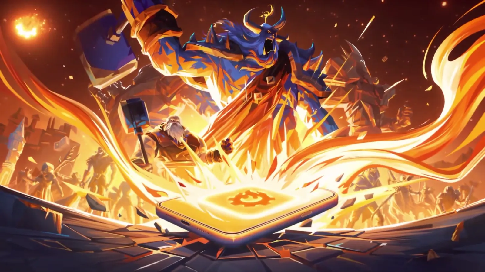
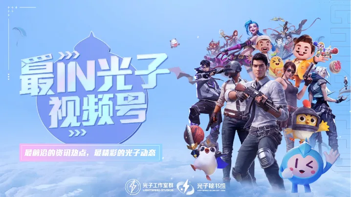
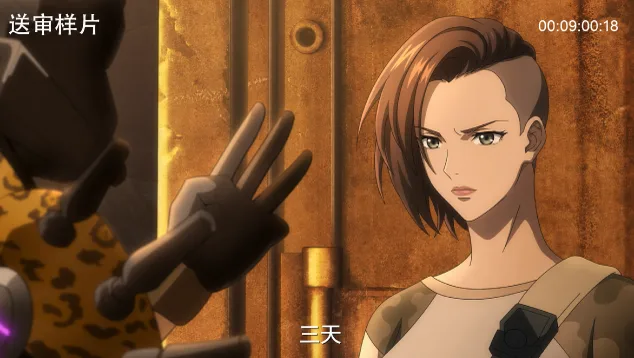
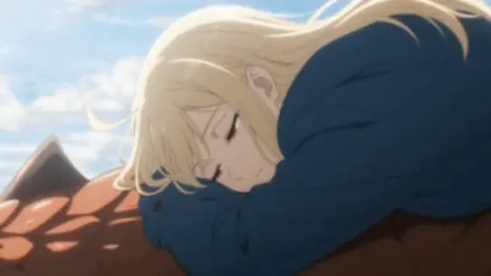
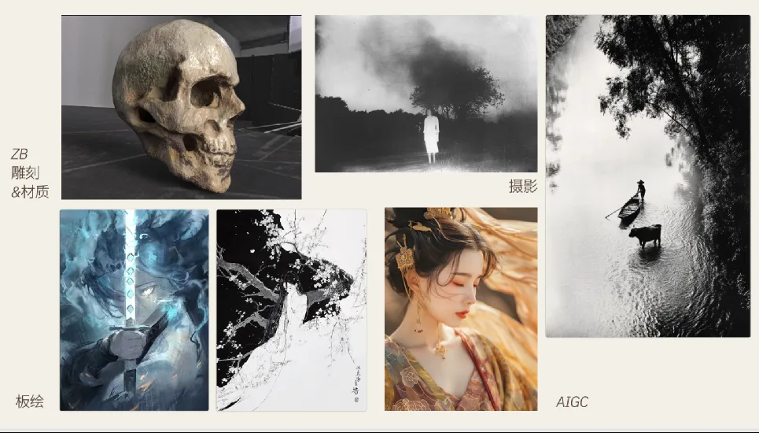
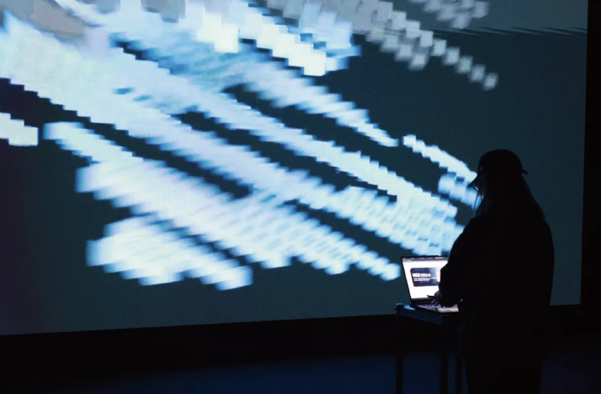
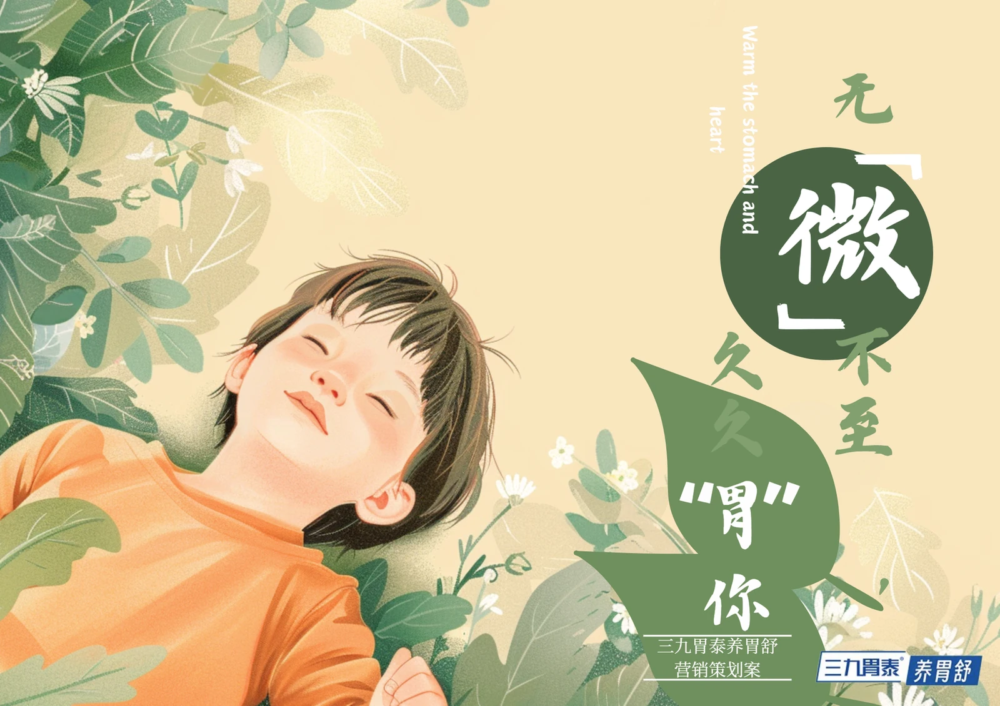
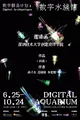
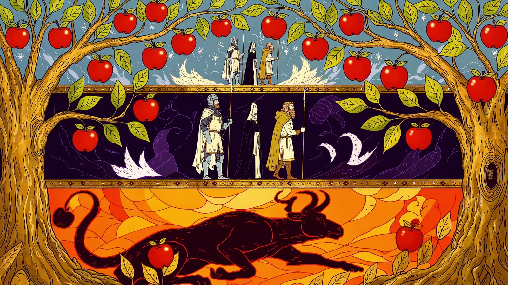

Film / Animation / Directing
SZTU2023–2027 · Art & Technology
2810418181@qq.com View workShang Zijie2023–2026
Film / Animation / Directing
SZTU2023–2027 · Art & Technology
2810418181@qq.com View workInteractive Art, Creative Coding, Exhibition Planning, Mechanical Principles, Concept to Form, Design Thinking, Visual Communication
Mandarin · native / English · CET-4
Directing intern
Planning & graphic design
Visual design & event planning
AI film production
Volunteer art educator
Founded and registered the society, then organized AI workshops and peer talks.
Produced short videos and studied trends across video platforms.
Coordinated teams and delivered campus-wide events.
I use moving images and interactive media to tell stories about how people feel and relate to each other. My work ranges from a microscopic view of urban isolation to a web experience about traditional tie-dye. It has been shown in Pingshan, Shenzhen, and at Hong Kong Polytechnic University.
I began building ComfyUI workflows in 2023 and used them to deliver 6,000 educational illustrations in a month. In 2025, I built an AI assistant and used it to develop a voice-interactive NPC in UE5 and my first Web3D art experience.
Curiosity drives my practice. Since 2023 I’ve worked with local Stable Diffusion, ComfyUI and LoRA training. Founding a university society and earning a project management certificate taught me how to carry ideas through with a team.
I keep learning as image-making tools evolve. What matters to me is making work that connects with someone.

Music videos, ASMR and a study of virtual performers.

Eight rounds of feedback, from AI previs to the in-game gold-card reveal.

A talk on visual storytelling and a short film, Return to the Shore.

A workspace for shot analysis, AI previs and concept review.

Short films that reimagine familiar scenes.

Three approaches in four days, from character design to motion tests.

Live action and layout for Photon’s family open day.

Facial refinement for two leads, focused on a close-up and a hero shot.
Independent AIGC film.

A continuous macro shot that hides the credits in a relay of objects.

A speculative short about power at the family table, imagined as a miniature universe.

Cel-shaded characters and painterly backgrounds in a chase and duel.

A proof of concept for a Soulslike gameplay trailer.

A timing study in the rhythm of hand-drawn Japanese TV animation.

A hand-drawn-style short set in a character’s inner world.

A 2D short inspired by illuminated manuscripts.

Prompt limits, asset choices and lighting as storytelling.

One trailer, several visual languages.

A VR action game set on a zero-gravity station.

A VR puzzle level with real-time erasing and asymmetric two-hand controls.

Audio-reactive generative visuals in TouchDesigner.

An experiment in generative image-making.

Worldbuilding and concept art for the Panhui universe.

Brand visuals and merchandise concepts.

A kinetic installation imagining encounters between civilizations.

Sculpture, illustration, photography and interactive experiments.

Awarded and exhibited at Hong Kong PolyU’s 48-hour AI filmmaking competition.

A UE5 Blueprint NPC driven by voice, Kinect and OSC commands.

Visual design and event planning for the organizer in Shenzhen.

An immersive site about traditional tie-dye.

A brand strategy and campaign proposal.

A brand strategy and campaign proposal.

A Samurai Champloo concept short.
Awarded and exhibited
Invited young artist · Jun–Oct 2025

National first prize, Speculative Art · Aug 2025

National second prize · Feb 2025

National third prize · Feb 2025
Work exhibited · May 2025

National excellence award, Campaign Planning
Project management certificate
Top university scholarship · RMB 20,000 · top 0.7% · Jan 2026
First prizes in two individual categories and one team category, 2025 · Outstanding Student Leader, 2024


